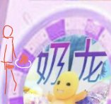

🍀🍥竹蜻蜓🍥🍀（戒OD第∞天）每天都是最后一天OD
@zqtlovekris99
梦见我和8个mtf去玩舞萌，把舞萌手台拆下来放桌面上，每个人分别站在一个舞萌的按键位置，然后把唧唧从下面伸进去，唧唧立起来的时候龟头就正好能从按键的位置伸出来，然后我就搁那玩，每次拍到一个按键对应的人还会发出娇喘，然后我就玩大风车雨刮器，听着一帮跨女发出此起彼伏的男声娇喘但是他们又控制不住自己的叫声，我一边打他们一边哭着娇喘
